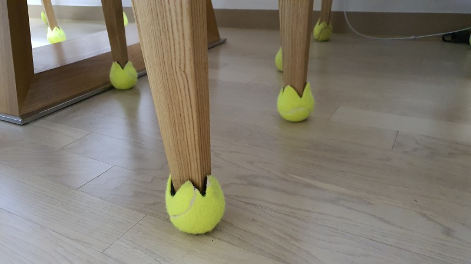
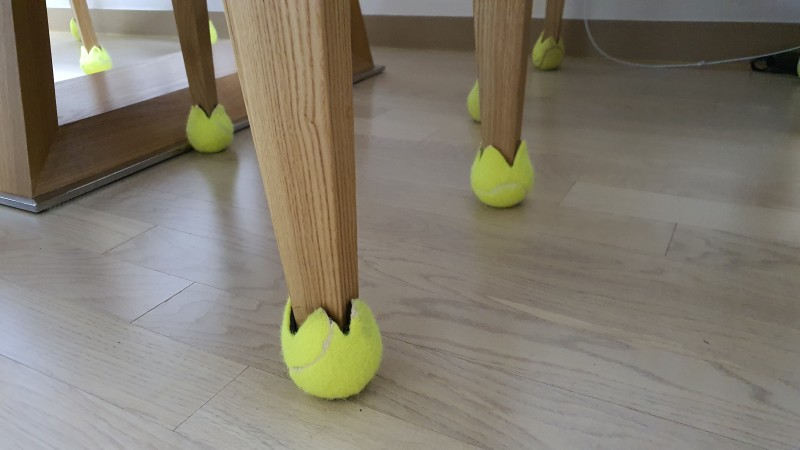

- Name : 설다슬
- Birth : 1994. 08. 14
- Addrress : 서울시 양천구 신월동
- Phone : 010-7132-2648
- Email : tet1123@naver.com
로딩중
Seol Da Seul
CREATIVE PUBLISHER
넓은 하늘과 같이 많은 것을 담아낼 수 있는 웹퍼블리셔 설다슬 입니다.
새로운 것을 받아들이고 도전하는 것에 즐거움을 느끼며
개성있는 웹사이트 표현을 위해
늘 준비되어 있습니다.
스크롤바를 내리면 작품을 감상할 수 있습니다.
ABOUT ME
VISION
순간의 장면으로 모든 것을 판단하는 요즘 시대에
한번에 다수의 눈을 사로잡는 시각적인 효과를 가진 디자인을 개발하는 디자이너가 되고
싶습니다.
홈페이지 디자인을 통해 단순히 해당 브랜드를 파악하는 것을 뛰어넘어
호기심이 생길 수 있는 페이지 디자인 아이템을 개발하고 싶습니다.
기승전결이 확실하지만 부드럽게 그 과정을 받아들일 수 있는 드라마틱한 페이지를 디자인하고 싶습니다.
막연하게 이렇게 저렇게 디자인 하고 싶다! 라는 말보다
브랜드별로 알맞은 디자인 구성을 짜임새 있게 배치하고,
클라이언트와 소통하며 발전하는 웹디자이너가 되고 싶습니다.
WHAT CAN I DO?
클라이언트와의 소통을 통해 UI/UX 디자인의 뼈대를 만들고
Figma를 이용해 페이지디자인을 할 수 있습니다.
HTML5 & CSS3 시멘틱 페이지를 ZenCoding(EMMET), SCSS로 코딩할 수 있습니다.
또한, Javascript/jQuery를 이용한 페이지구현이 가능합니다.
새로운 코딩기법과 디자인을 배우는 것이 정말 즐겁습니다.
- ZenCoding(EMMET) & SCSS
- Javascript & jQuery/React 로직구현
- MVC 패턴의 페이지 구성
- RWD 반응형 웹디자인
- HTML5 DTD 유효성 검사 통과
- 웹접근성을 향상시킨 시멘틱 페이지
WORK STYLE
- 구조와 디자인, 기능을 분리한 MVC패턴을 구현
- 자바스크립트와 jQuery / React를 구현
- HTML5 시멘틱과 CSS3 웹페이지를 구현
다른 사람이 말하는 나
-
설민
의욕이 넘치고, 늘 해내는 친구잘못된 길로 갈때면 늘 바로잡아 주고, 주변사람들이 지쳐서 의욕을 잃었을 땐 언제든 나타나 힘을 실어주고 함께 해결할 수 있는 능력을 주는 친구이다. 이 친구와 함께라면 장기프로젝트도 지루하지 않고 재밌게 진행할 수 있을 것 같은 느낌!
-
원준
한결같은 마음으로 들어주는 친구비나오나 눈이오나 늘 같은자리를 지켜주며 이야기에 공감해주는 친구.
곤경에 처했을 땐 가장 먼저 찾아와서 끝까지 함께해주고, 문제가 발생했을 땐 먼저 나서서 해결해주는 친구. -
다솜
다른 시각으로 바라볼 줄 아는 친구짜여진 것에서만 빙빙 맴돌지 않고 늘 다른길을 찾아 개척해나가는 친구.
같은 것을 봐도 다른 시각으로 바라보고 틀에 맞춰진 정답이 아닌 예상밖의 정답을 말해주며, 개성있고 감각적이며 함께하는 사람들에게 새로운 자극이 되어주는 친구이다.
SKILL
탁월한 UX분석능력과 Emmet/Zencoding 활용
-
UX/UI 디자인
사용자의 Context와 Needs를 파악하고
Problem을 해결할 수 있는 Insight 도출 -
반응형 웹표준
시멘틱을 지향하는 HTML/CSS 작성능력 보유,
자바스크립트와 제이쿼리 기반의 로직 구현 가능
SASS 전처리기와 리액트 라이브러리 활용
-
Sass Preprocessor
협업 웹코딩의 필수 기술인 SCSS를 이용한
CSS 스타일링을 원활이 사용할 수 있습니다. -
리액트 라이브러리
국내 프론트엔드 시장의 대세 리액트 코드구현,
자바스크립트와 제이쿼리 기반의 로직구현 가능
ABILITY
젠코딩
HTML5
CSS
jQuery
웹기획
디자인
리더쉽
적극성
창조성
사교성
책임감
정직성
온라인 이력서
긍정적인 사고방식을 가지고 문제해결을 위해 고민하는 스타일이라 풀리지 않는 문제에
직면했을 때에도 언제나 풀릴 수 있다는 희망을 가지고 작업에 임합니다.
HTML5 & CSS3 시멘틱 페이지를 ZenCoding(EMMET)으로 코딩할 수 있습니다.
클라이언트의 요구사항을 적극적으로 반영하는 UI/UX 디자인 능력은 저의 최고의
장점중 하나입니다.
JS 플러그인을 사용에 그치지 않고 필요한 기능을 직접 구현할 수 있는
Javascript/jQuery/React 로직구현이 가능합니다.
UX DESIGN
작품리스트
이전 다음내가 생각하는 사용자경험 - User Experience
UX, 즉 사용자 경험은 사용자가 어떤 제품이나 서비스를 경험하는 것이라고 정의되어
있습니다.
저는 제품을 사용할 때 익숙한 것을 선호합니다.
여러가지 시행착오를 겪을 필요 없이 익숙한 것을 사용할 때 안정감이 있기 때문입니다.
그래서 새로운 제품을 사용하거나 환경에 놓였을 때 쉽게 적응하지 못하는 경우가
있었습니다.
하지만 제품을 구매하거나 사용하게 될 때 그 브랜드의 로고 라던가, 사용법 이라던가,
아주 작은 부분이라도 이전 제품과 비슷한 느낌이 들 때면 경계심이 풀리며 온전히
받아들이게 되는 것 같습니다.
이처럼 사용자 경험은 본인이 직접 경험 한 것에 대한 익숙함과, 새로운 부분이 균형을 이뤘을
때 최고의 UX 디자인을 충족시킨다고 생각합니다.
거꾸로 접는 우산
디자인과 UX의 차이
- 1. 병의 재탄생
-
병안에 배를 만들어 냄으로 단순히 물을 담는 의도를 벗어나
장식품으로 완성시킨 사례
- 2. 테니스공
-
테니스 공이 층간소음을 방지하기 위한
의자다리 커버로 재활용된 모습
 

UX-DESIGN WORKS
PORTFOLIO
샐러디 (리뉴얼 디자인)
SALADY Renewal Design
기존 웹사이트의 개선사항을 찾아 메인페이지를 리뉴얼 디자인하였습니다.
샐러디만의 커스텀메뉴를 메인페이지에 디자인하였으며,
기존의 깔끔한 메뉴페이지를 메인에 비치함으로 접근성을 강조하였습니다.
작업프로그램 : Figma, Visual Studio Code
작업기여도 : 100% 개인 작업
CJ NEWSROOM (리뉴얼 디자인)
CJ NEWSROOM Renewal Design
기존 웹사이트의 개선사항을 찾아 메인페이지를 리뉴얼 디자인하였습니다.
NEWROOM이라는 특징을 가지고 한눈에 보여질 수 있게끔 배치하였습니다.
작업프로그램 : Figma, Visual Studio Code
작업기여도 : 100% 개인 작업

멜론 티켓 사이트 디자인
MELON TICKET Site Design
공연, 전시에 대한 내용이 한눈에 보이게 디자인하였습니다.
멜론의 고유색상인 그린컬러를 적용하여 통일성을 주었습니다.
작업프로그램 : figma, Visual Studio Code
작업기여도 : 100% 개인 작업


필요한 기능을 직접 javascript/jquery 로직 구현
문제가 주어졌을 때 그것에 대해 꾸준히 고민하고 해결되기전엔 자리를 뜨지 않을 정도로
꾸준하게 노력하는 성향이 있습니다.
HTML5 & CSS3 시멘틱 페이지를 SCSS, ZenCoding(EMMET)으로 작성할 수 있습니다.
클라이언트의 요구사항을 적극적으로 반영하는 UI/UX 디자인 능력은 저의 최고의 장점중
하나입니다.
JS 플러그인을 사용에 그치지 않고 필요한 기능을 직접 구현할 수 있는 Javascript/jQuery
로직구현이 가능합니다.
for문과 다중 if문의 결합한 로직 구현
SASS, EMMET 활용
페이지 전체의 계층구조를 입체적으로 분석할 수 있는
실무형 코딩기법 Emmet을 사용할 수 있어 업무시간을 단축시킬 수 있을뿐 아니라,
유지보수도 더욱 쉽고 정확하게 처리할 수 있습니다.
SCSS의 가장 큰 장점인 변수와 Mixin 기능을 적극 활용하여
CSS 스타일링을 할 수 있습니다.
Sprite-Image와 IR(Image Replacement)기법에 능숙
id, class를 남발하지 않고 원하는 요소를 셀렉팅할 수 있는 능력,
CSS3 Transform, Transition, Keyframes을 이용한 애니메이션 효과 구현
귀사에 입사를 지원합니다.
더욱 궁금하신 점은 면접시 말씀드리겠습니다. 감사합니다~!
본 페이지는 저의 개인 포트폴리오용으로 제작되었으며, 상업적인 목적과 관련이 없음을
알려드립니다.